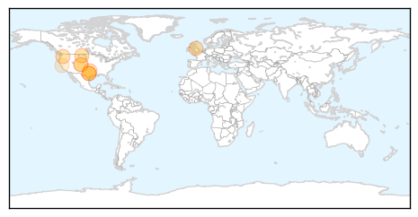

Cholera
30-Day Web Trend
0 alerts, 0 warnings

30-Day Twitter Trend
0 alerts, 0 warnings

Article Locations

Article Confidences

Top Articles:
- 0.998
- Cholera kills 32 in S’Sudan, education key to stemming outbreak, says UN
- 0.997
- UN: cholera outbreaks can be controlled thanks to vaccines, water and sanitation
- 0.996
- Cholera Claims 58 Lives
- 0.993
- Bechem Records 2 Cholera Deaths
- 0.987
- UNICEF to launch sensitization campaign to curb cholera
- 0.983
- Sudan Vision Daily
- 0.980
- World health groups ring alarm bell over threat of cholera in South Sudan
- 0.949
- Cholera outbreaks can be controlled: WHO
- 0.941
- Cholera cases rise
- 0.931
- Cholera has killed 32 people in South Sudan
- 0.910
- Children make up one fifth of cholera deaths in South Sudan: UNICEF
- 0.621
- Tanzania: Services in Nyarugusu refugee camp ‘stretched beyond their limits’
- 0.567
- Civilian killed inside South Sudan UN compound
- 0.561
- South Sudan: UN Mission deplores killing of civilian in Organization compound
- 0.550
- South Sudan: UN Mission deplores killing of civilian in Organization compound
- 0.515
- South Sudan: UN Mission deplores killing of civilian in Organization compound
Top Tweets:
-
No tweets found for Jul 08, 2015
West Nile Virus
30-Day Web Trend
3 alerts, 0 warnings

30-Day Twitter Trend
0 alerts, 0 warnings

Article Locations
Article Confidences

Top Articles:
- 0.993
- First Human Case of West Nile This Year
- 0.977
- Montana reports first human West Nile virus case of 2015
- 0.976
- West Nile Virus vaccine to enter safety trials in humans
- 0.973
- Year’s third case of West Nile virus confirmed in Oklahoma
- 0.956
- Take action against West Nile threat
- 0.934
- West Nile virus vaccine in horses
- 0.830
- First Colorado case of West Nile in county
- 0.825
- First mosquitoes test positive for West Nile in Colorado this year
- 0.570
- Bird in Benicia Tested Positive for West Nile Virus
Top Tweets:
- 0.580
- Flavivirus news: West Nile virus detected in Minnesota - MinnPost: MinnPostWest Nile virus dete... http://t.co/K6Si6wgxTM pathogenposse
- 0.575
- Flavivirus news: West Nile Virus facts - WCVB Boston: WCVB BostonWest Nile Virus factsWCVB Bost... http://t.co/oK3Lms5vOE pathogenposse